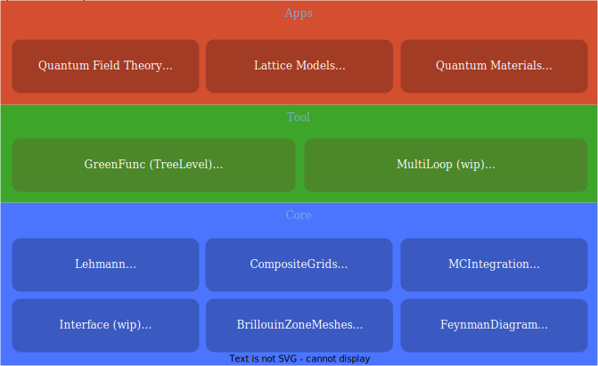

NumericalEFT
Numerical effective field theory toolbox for quantum many-body problem.


Motivation
Effective field theory (EFT) models the correlation functions of quantum many-body systems with an effective action defined below a certain energy/momentum scale. EFT has been widely used in high-energy physics, nuclear physics, and condensed matter physics. Originally, EFT was developed assuming the principle of locality, which states that an object is influenced directly only by its immediate surroundings. If one observes a long-range interaction between two particles (say, the Coulomb interaction between two electrons), then such interaction must be mediated by an intermediate particle called a gauge boson (the photon in the previous example).
All known theories of the elementary particles in our universe are local theories, but it does not mean the local EFT rules everything. Below the energy scales most relevant for human life, the speed of light can be safely assumed to be infinite so that effective physical laws are governed by an absolute Newtonian time. In those systems, an event at one point can cause a simultaneous result at another point. The EFTs describe such systems are then nonlocal.
We create this package to extend the conventional EFT to incorporate the nonlocality. Such nonlocal EFTs are typically much more difficult to calculate compared to the conventional EFTs. Analytic solution is not feasible anymore, and numerical solution is usually the only option. We thus develop this numerical package to solve the problem and make nonlocal EFT a practical tool for real-world applications, such as the electron liquids in real materials, chiral EFT in the neutron-rich matter, and all kinds of emergent low-energy field theories in lattice models.
Features
The package NumericalEFT.jl is a collection of several independent components, which are organized in the following infrastructure:

Most of the components have been published as independent packages, and you can test or use them separately. The packages are still fast-evolving, but many are production-ready.
Core packages: a set of self-contained and general-purpose tools.
Lehmann.jl: Discrete Lehmann representation (DLR) for imaginary-time/Matsubara frequency Green's function. For a generic Green's function at a temperature T, DLR is capable of representing it up to a given accuracy ϵ with a cost ~ log(1/T)log(1/ϵ), significantly cheaper than a naive approach with a cost ~ 1/(Tϵ).
FeynmanDiagram.jl: A mini-compiler that compiles generic multi-loop Feynman diagrams to a computational graph, which then can be efficiently manipulated or evaluated. The same type of computational graph has been the corner of neural-network-based machine learning.
MCIntegration.jl: An adaptive Monte Carlo calculator for general high dimensional integral. It is one of the most robust and fastest Monte Carlo integration packages on the market.
CompositeGrids.jl: Composite Cheybeshev/Gaussian/logarithmic grid systems for highly efficient one-dimensional interpolation and integration. It allows the user to combine different grids to represent nontrivial functions.
BrillouinZoneMeshes.jl: Compact mesh systems for representing and manipulating functions defined on generic Brillouin zone in 2D or 3D.
Toolbox packages: integrated software for quantum many-body problems
GreenFunc.jl: A software to calculate, manipulate and analyze the Green's functions and the vertex functions at the tree-level, which characterize the quantum field dynamics in the semiclassical limit ħ→0. It consists of:
- A container of generic Green's functions based on the discrete Lehmann representation and adaptive mesh systems.
- Several helper functions to generate typical Green's functions. For example, a set of functions to calculate the many-body Green's functions of a small cluster of Hubbard-type atoms is a small-scale exact diagonalization solver.
- Import(export) Green's function from(to) the Triqs.
MultiLoop.jl (WIP): A software to calculate and analyze the quantum many-body effects beyond the semiclassical limit. It consists of:
- Diagrammatic Monte Carlo calculator of multi-loop Feynman diagrams of correlation functions and vertex functions.
- Renormalization technique to improve the perturbation theory.
- Renormalization Group analysis.
Applications
ElectronGas.jl: A package that uses the numerical EFT to explore many-fermion systems with singular interactions. It can be used to study the uniform electron gas problem, Hertz-Millis theory, etc.
QuantumMaterials.jl (WIP): Ab-initio methods for real materials based on an effective field theory.
Installation
This package has been registered. So, simply type import Pkg; Pkg.add("NumericalEFT") in the Julia REPL to install.
Questions and Contributions
Contributions are very welcome, as are feature requests and suggestions. Please open an issue if you encounter any problems.